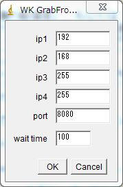
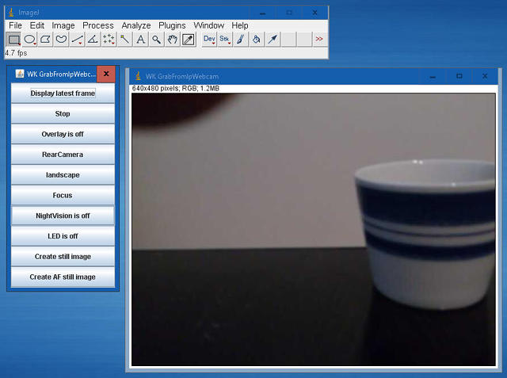

6th October 2021 at 2:40pm
スマートフォンのアプリ「IP Webcam」は、ロシアのPavel Khlebovich氏の作ったウェブアプリケーションです。
IP WebcamはAndroidOS搭載のモバイル端末を様々な視聴方法で閲覧可能なネットワークカメラにすることができます。
起動し、
http://[モバイル端末のIP]:[ポート番号]にブラウザでアクセスすると、モバイル端末のカメラで取得した画像を表示したり、その他さまざまな制御を実行することができます。
http://[モバイル端末のIP]:[ポート番号]/photo.jpg上のように/photo.jpgとつけたURLにアクセスすることで、モバイル端末のカメラ画像を取得することができます。
また、photo.jpgの代わりに、別の文字列にすることでさまざまな機能を実行することができます。
enabletorchでLEDのON、disabletorchでLEDのOFF、focusでフォーカスの実行など。
非常に良く出来たアプリです。
WK_GrabFromIpWebcamプラグインについて
WK_GrabFromIpWebcamプラグインは、このIP Webcamでネットワーク化したモバイル端末からカメラ画像の取得などを行うことができるImageJのプラグインです。
今のところ、以下の機能が使えます。
- 「映像の解像度」、もしくは「静止画の解像度」での連続撮像
- AFあり、もしくは無しで静止画の撮像
- フロントカメラ／リアカメラの切替え
- フォーカス固定／オートフォーカスの切替え
- LEDのオン／オフ切替え
- ナイトビジョンのオン／オフ切替え
- オーバーレイ表示のオン／オフ切替え
- 映像の向きの切替え
カメラで取得した画像を手軽にImageJに取得したい場合に便利かもしれません。
ソースとバイナリーについて
ソースはこちらに、
バイナリーはこちらに置いておきます。（インストール方法もリンク先に書いてあります）
ネットワークの設定
IP Webcamでネットワーク化したモバイル端末にアクセスする方法は複数あります。
- Wi-Fiルータを介して、PCとモバイル端末をつなげる
- PCをWi-Fi親機にして、モバイル端末をつなげる
- モバイル端末をWi-Fi親機にして（Wi-Fiテザリング機能）、PCをつなげる
家庭だと、Wi-Fiルータでつなげるのが簡単かもしれません。
マクロの簡単な説明
- スマートフォンの
IP Webcamを起動し、「映像ストリーミング開始」を実行してくださいIP Webcamが起動すると、画面下にURLが表示されますので、このURLをメモしておいてください。
WK_GrabFromIpWebcamを起動すると、以下のようなダイアログが開きます。
- ip1～portには、上でメモしたURLを入力してください。
- ip2～portのどれか一つでも空白の場合は、ip1に書いたURLが有効になります。
http://192.168.255.255:8080のような記述が可能です。 - wait timeは、静止画の転送間隔を入力します
( 本プラグインは、ビデオストリームは使っていません。静止画をひたすら転送しています。その間隔です。)
- OKを押すと、以下のようなウィンドウと取得した画像のウィンドウが表示されますので、所望の機能を実行してください。
